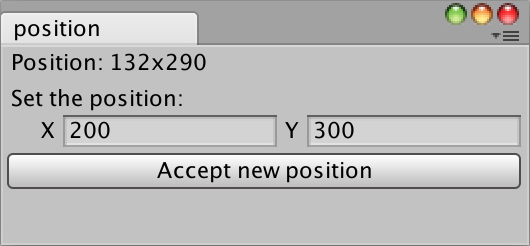

EditorWindow.position
public Rect position;
Description 描述
The desired position of the window in screen space.
Setting this value will undock the window if it is docked.

Create an undocked editor window with position.
// The position of the window is displayed when it is // external from Unity.
using UnityEngine; using UnityEditor;
public class PositionExample : EditorWindow { Vector2Int p1; bool showBtn = true;
[MenuItem("Examples/position")] static void Init() { GetWindow<PositionExample>("position"); }
void OnGUI() { Rect r = position; GUILayout.Label("Position: " + r.x + "x" + r.y);
p1 = EditorGUILayout.Vector2IntField("Set the position:", p1); if (showBtn) { if (GUILayout.Button("Accept new position")) { r.x = p1.x; r.y = p1.y;
position = r; } } } }